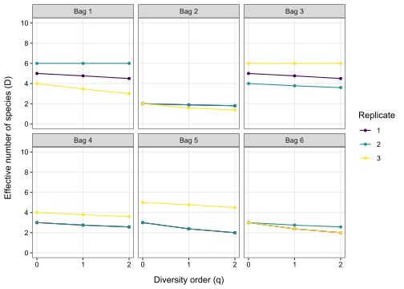

Code
library(tidyverse)
library(knitr)
library(viridis)Benjamin Delory ![]()
Welcome to this tutorial on quantifying taxonomic diversity in R!
Throughout this tutorial, you will learn different ways to quantify species diversity in an ecosystem and become aware of some of the challenges associated with quantifying biodiversity. This tutorial focuses on quantifying taxonomic diversity across scales (alpha, beta, and gamma diversity sensu Whittaker 1960). In addition, you will use the knowledge gained in tutorials 1 and 2 to calculate Hill numbers of order q (i.e. the effective number of species for a given diversity order q ) and plot diversity profiles to analyse and compare biodiversity between different sites in a hypothetical metacommunity. Particular attention will be paid to the importance of sampling effort when comparing biodiversity estimates between sites with different levels of biodiversity.
There are R packages that allow you to calculate all the diversity measures listed above, but we will not be using them in this tutorial. We would like you to write your own R code to calculate them. Once again, it’s all about learning by doing.
Let’s get started!
The first step is to create some data to work with. You will do this by sampling wooden meeples (which are small board game pieces) to generate a site by species abundance matrix. Our hypothetical metacommunity consists of six paper bags (which represent different sampling sites), each containing 30 meeples (which represent different individuals living at a site). Meeples of the same colour belong to the same species. We will not give you any information about species diversity and composition at each site. You will have to obtain this information yourself, by repeatedly sampling each site without looking inside the bags.
Our species pool consists of 10 different species, each represented by a different colour. This is a small species pool, but it is enough to meet the objectives of this tutorial.
The aim of this exercise is to simulate a survey carried out to characterise the taxonomic diversity of six sites making up our metacommunity. Each site will be sampled multiple times to simulate surveys in a number of quadrats/locations at each site.
You can start generating biodiversity data using the following procedure:
Divide into 6 sub-groups. Each sub-group should consist of 4 to 5 students.
Each sub-group takes one bag (each bag is labelled with a number from 1 to 6). The bags have a different composition and contain a different number of species.
One member of each a sub-group carefully mixes the content of the bag and randomly samples 6 individuals from the bag (this represents 20% of the individuals in a bag). Try not to look inside the bag to avoid any sampling bias.
Write down your observations in an Excel sheet (site as rows, species as columns).
Once your observations have been recorded, put your sample back into the bag and give the bag to another person in your group. Then, repeat the previous steps until you have at least five replicates. In your data sheet, report your observations independently for each replicate (i.e., each row in your data is a replicate within a site).
Once you have all the replicates needed for your bag, switch bags with another group and repeat the previous steps. Do this until you have five replicates for each bag.
Make sure that your data are formatted properly.
Load tidyverse, knitr, and viridis.
library(tidyverse)
library(knitr)
library(viridis)Alpha diversity (within-habitat diversity) is the average number of species across sites in our hypothetical metacommunity. Gamma diversity (regional diversity) is the total number of species present in our hypothetical metacommunity. Beta diversity (between-habitat diversity differentiation) is gamma diversity divided by alpha diversity.
Using the data collected earlier, calculate alpha, beta and gamma diversity in our hypothetical metacommunity using R. First, import your data into R. Then, use knowledge from tutorials 1 and 2 to write R code to calculate alpha, beta, and gamma diversity in our metacommunity.
kable(head(data, n=10))| Bag | Replicate | Red | Orange | Yellow | Green | Blue | Purple | Pink | White | Grey | Black |
|---|---|---|---|---|---|---|---|---|---|---|---|
| 1 | 1 | 1 | 0 | 0 | 1 | 2 | 1 | 1 | 0 | 0 | 0 |
| 1 | 2 | 0 | 1 | 0 | 1 | 1 | 0 | 1 | 1 | 0 | 1 |
| 1 | 3 | 0 | 1 | 0 | 0 | 0 | 0 | 1 | 0 | 3 | 1 |
| 1 | 4 | 1 | 0 | 3 | 0 | 0 | 0 | 0 | 0 | 1 | 1 |
| 1 | 5 | 0 | 1 | 1 | 1 | 1 | 1 | 1 | 0 | 0 | 0 |
| 2 | 1 | 0 | 0 | 0 | 5 | 0 | 1 | 0 | 0 | 0 | 0 |
| 2 | 2 | 0 | 0 | 0 | 4 | 0 | 2 | 0 | 0 | 0 | 0 |
| 2 | 3 | 0 | 0 | 0 | 2 | 0 | 4 | 0 | 0 | 0 | 0 |
| 2 | 4 | 0 | 0 | 0 | 5 | 0 | 1 | 0 | 0 | 0 | 0 |
| 2 | 5 | 0 | 0 | 0 | 2 | 0 | 4 | 0 | 0 | 0 | 0 |
gamma <- as.numeric(data |>
pivot_longer(Red:Black,
names_to = "Species",
values_to = "Abundance") |>
group_by(Species) |>
summarise(Abundance = sum(Abundance)) |>
summarise(Gamma = sum(Abundance > 0)))Gamma diversity: 10
alpha <- round(as.numeric(data |>
pivot_longer(Red:Black,
names_to = "Species",
values_to = "Abundance") |>
group_by(Bag, Species) |>
summarise(Abundance = sum(Abundance)) |>
group_by(Bag) |>
summarise(Alpha = sum(Abundance > 0)) |>
summarise(Alpha = mean(Alpha))), 1)Alpha diversity: 5.8
beta <- round(gamma/alpha, 1)Beta diversity: 1.7
Use what you learned in previous tutorials to calculate the average number of species at each site.
table <- data |>
pivot_longer(Red:Black,
names_to = "Species",
values_to = "Abundance") |>
group_by(Bag, Replicate) |>
summarise(Richness = sum(Abundance>0)) |>
group_by(Bag) |>
summarise(Avg_richness = round(mean(Richness), 1))kable(table)| Bag | Avg_richness |
|---|---|
| 1 | 5.0 |
| 2 | 2.0 |
| 3 | 4.8 |
| 4 | 3.6 |
| 5 | 3.0 |
| 6 | 2.4 |
In a community consisting of n species, the Hill number (or effective number of species) of order q can be calculated using Equation 1 (\(q \geq 0\), \(q\neq1\)) and Equation 2 (\(q=1\)), where pi is the relative abundance of species i in the community (\(p_i \in [0,1]\)).
\[ ^qD = (\sum_{i=1}^{n}p_i^q)^{\frac{1}{1-q}} \tag{1}\]
\[ ^1D=exp(-\sum_{i=1}^{n}p_i\log p_i) \tag{2}\]
Use Equation 1 and Equation 2 to calculate the effective number of species of order 0 (species richness), 1 (Hill-Shannon, the exponential of Shannon’s entropy) and 2 (Hill-Simpson, the inverse of Simpson’s concentration index) at each site of our hypothetical metacommunity. Plot your results in a figure with 6 panels (one panel for each site). For each site, plot the effective number of species as a function of q (this is called a diversity profile plot). Plot separate lines (using geom_line()) for each replicate (the group argument in aes() will be useful here).
What do you observe? What can you conclude about the taxonomic diversity at each site?
plot <- data |>
mutate(Total = Red+Orange+Yellow+Green+Blue+Purple+Pink+White+Grey+Black) |>
mutate(Red=Red/Total,
Orange=Orange/Total,
Yellow=Yellow/Total,
Green=Green/Total,
Blue=Blue/Total,
Purple=Purple/Total,
Pink=Pink/Total,
White=White/Total,
Grey=Grey/Total,
Black=Black/Total) |>
pivot_longer(Red:Black,
names_to = "Species",
values_to = "Abundance") |>
filter(Abundance!=0) |>
group_by(Bag, Replicate) |>
summarise(q0=sum(Abundance^0)^(1/(1-0)),
q1=exp(-sum(Abundance*log(Abundance))),
q2=sum(Abundance^2)^(1/(1-2))) |>
pivot_longer(q0:q2,
names_to = "q",
names_prefix = "q",
names_transform = as.numeric,
values_to = "diversity") |>
mutate(Bag=paste("Bag ", Bag, sep=""),
Replicate=as.factor(Replicate)) |>
ggplot(aes(x = q,
y = diversity,
group = Replicate,
colour=Replicate))+
geom_line()+
geom_point(shape=16)+
facet_wrap(~Bag)+
theme_bw()+
xlab("Diversity order (q)")+
ylab("Effective number of species (D)")+
scale_colour_viridis(discrete=TRUE)+
theme(axis.title.x = element_text(margin = margin(t=10)),
axis.title.y = element_text(margin = margin(r=10)),
axis.text = element_text(colour="black"),
panel.grid.minor = element_blank())+
scale_x_continuous(breaks=c(0,1,2),
limits = c(0,2))+
scale_y_continuous(breaks=seq(from = 0,
to = 10,
by = 2),
limits=c(0,10))plot
In the first part of this tutorial, we estimated taxonomic diversity by randomly sampling 20% of the individuals living at each site. But what would happen if we increased the sampling effort and sampled 50% of the individuals present at each site? Using the same sampling procedure as above, create a new data set by randomly selecting 15 individuals per site and make a new version of the figure you created for the third exercise.
What do you notice? What can you conclude about the importance of sampling effort in accurately quantifying biodiversity? In what situations does increasing the sampling effort make it possible to obtain better biodiversity estimates?
plot <- data |>
mutate(Total = Red+Orange+Yellow+Green+Blue+Purple+Pink+White+Grey+Black) |>
mutate(Red=Red/Total,
Orange=Orange/Total,
Yellow=Yellow/Total,
Green=Green/Total,
Blue=Blue/Total,
Purple=Purple/Total,
Pink=Pink/Total,
White=White/Total,
Grey=Grey/Total,
Black=Black/Total) |>
pivot_longer(Red:Black,
names_to = "Species",
values_to = "Abundance") |>
filter(Abundance!=0) |>
group_by(Bag, Replicate) |>
summarise(q0=sum(Abundance^0)^(1/(1-0)),
q1=exp(-sum(Abundance*log(Abundance))),
q2=sum(Abundance^2)^(1/(1-2))) |>
pivot_longer(q0:q2,
names_to = "q",
names_prefix = "q",
names_transform = as.numeric,
values_to = "diversity") |>
mutate(Bag=paste("Bag ", Bag, sep=""),
Replicate=as.factor(Replicate)) |>
ggplot(aes(x = q,
y = diversity,
group = Replicate,
colour=Replicate))+
geom_line()+
geom_point(shape=16)+
facet_wrap(~Bag)+
theme_bw()+
xlab("Diversity order (q)")+
ylab("Effective number of species (D)")+
scale_colour_viridis(discrete=TRUE)+
theme(axis.title.x = element_text(margin = margin(t=10)),
axis.title.y = element_text(margin = margin(r=10)),
axis.text = element_text(colour="black"),
panel.grid.minor = element_blank())+
scale_x_continuous(breaks=c(0,1,2),
limits = c(0,2))+
scale_y_continuous(breaks=seq(from = 0,
to = 10,
by = 2),
limits=c(0,10))plotOur tutorial can’t cover everything, and there’s still a lot to learn about quantifying biodiversity! If you are interested, take a look at these excellent papers.
Chao A, Chiu C-H, Jost L. 2014. Unifying Species Diversity, Phylogenetic Diversity, Functional Diversity, and Related Similarity and Differentiation Measures Through Hill Numbers. Annual review of ecology, evolution, and systematics 45: 297–324.
Hill MO. 1973. Diversity and evenness: A unifying notation and its consequences. Ecology 54: 427–432.
Roswell M, Dushoff J, Winfree R. 2021. A conceptual guide to measuring species diversity. Oikos 130: 321–338.
Whittaker RH. 1960. Vegetation of the siskiyou mountains, Oregon and California. Ecological monographs 30: 279–338.